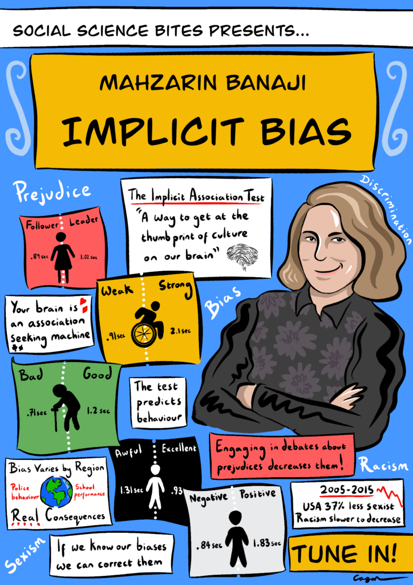

Introduction
When you think in a stereotypical manner, it does not make you a racist, sexist, or whatever-ist. It just means your brain is working properly, noticing patterns, and generalizing. But the same thought processes that make people smart can also make them biased. This tendency for stereotype-confirming thoughts to pass spontaneously through our minds is what psychologists call implicit bias. It sets people up to overgeneralize, sometimes leading to discrimination even when people feel they are being fair.
unspoken social cognition.
"Also known as unspoken social cognition, implicit bias is an overarching term that describes how out own attitudes or stereotypes affect our understanding, actions, and decisions in an unconscious manner. These biases, which brings about advantageous and disadvantageous lenses of analysing the world and other people, are activated involuntarily and without an individual’s awareness or intentional control. Residing deep in the subconscious, these biases are different from known biases that individuals may choose to conceal for the purposes of social and/or political correctness.”
These implicit assessments we make in our own subconscious can cause us to have certain views and standpoints about various aspects of life such as events, people, or opinions. When it comes to people with implicit assessments, we have certain attitudes other people based on normal characteristics such as race, ethnicity, age, and appearance. These associations or assessments are learnt and developed in everyone from a young age through the course of a lifetime through a variety thing such as early life experiences, close family and friends who you grew up with, the media or the news.
>
On April 12, 2018, two African American men asked to use the restroom at a Starbucks in Philadelphia. A barista told them that the bathrooms were for customers only (Park, 2018). When the two men were asked to leave the premises after they occupied a table without making a purchase, they declined to leave, saying they were waiting for an acquaintance. In response, the store manager called the police, who escorted the two men out of the coffee shop. When a video of the incident taken by a customer went viral on social media, Starbucks apologized and closed all of its brand-operated stores for half a day to provide mandatory implicit bias training for its 175,000 employees (Chapell, 2018).
Gender Bias in Software
92.1% of the 26,000 programmer respondents to Stack Overflow's 2015 developer survey were identified as male; only 5.8 percent identified as female. (The remaining respondents either chose "other" or declined to answer.) In an era where technology is used everyday for almost everything and is constantly growing from day to day, building software today demands a design where constant change is possible. Technology and software being built needs to consider how it will be used by a diverse group of consumers for it to be successful, everyone needs to be able to use it effectively. It is important that women have a louder voice then they do now and the equal opportunity to shape what is being built and how it will shape the world.
The argument.
Behind every piece of technology there is a programmer, and the danger lies with those who programme because their product takes on their position, ultimately producing narrow-minded algorithms that are biased. From software algorithms to infrared senses people of colour are excluded and ignored because they barely exist in a dominantly white field. The severity of this issue cannot be stressed enough, people of colour need to be a dominant force in technology so that it takes on a more inclusive space in our society.
Bibliography
Understanding Implicit Bias [Internet]. Kirwaninstitute.osu.edu. 2020 [cited 22 June 2020]. Available from: http://kirwaninstitute.osu.edu/research/understanding-implicit-bias/
Roose K. Survey says: 92 percent of software developers are men [Internet]. Splinter. 2020 [cited 22 June 2020]. Available from: https://splinternews.com/survey-says-92-percent-of-software-developers-are-men-1793846921